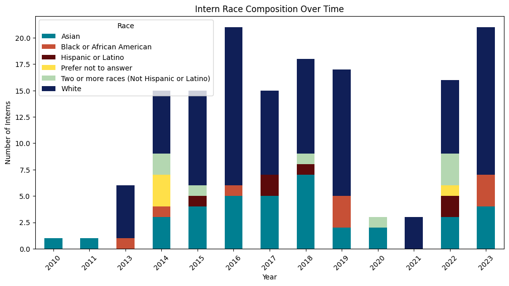
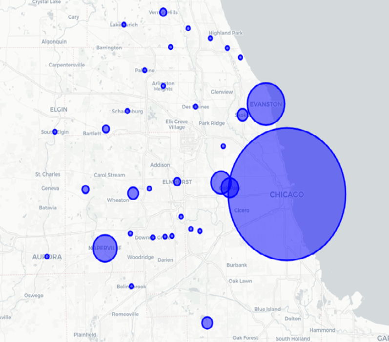
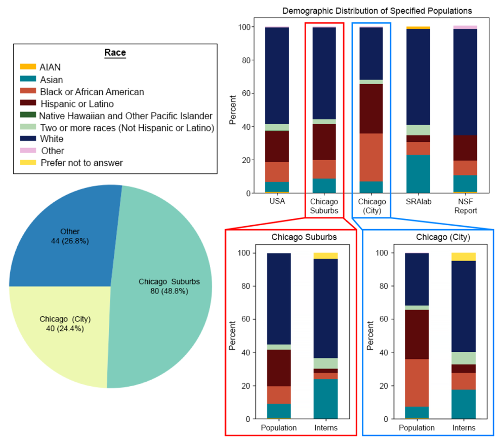

An brief analysis of the demographics of the
summer interns at the
Shirley Ryan AbilityLab
from 2010-2023
Overview
We have a monthly newsletter in the lab and during the pandemic, a friend and I started a segment covering diversity and inclusion in STEM and healthcare. Recently, I was curious about the diversity of our intern cohorts. I reached out to the HR department and got demographics information for our interns from 2010 through 2023. The gender composition of the interns since 2010 was very close to 50/50 so below I will focus mainly on the racial composition of the interns based on the information I was able to get from HR.

Racial Composition Over The Years
This plot shows the racial demographic data collected by our HR deparment for each year. Since 2010, over 82% of interns identified as White or Asian. This data doesn't show any specific trends other than the number of interns has generally increased since 2010 and there was a drop in 2020 and 2021 which can be attributed to the COVID-19 pandemic.

Geographic Distribution
Since 2010 SRALab has had interns from 26 states with the vast majority coming from Illinois. Most interns come from the city of Chicago, with Evanston and Naperville rounding out the top 3. The inset on the right shows geographic distribution of intern hometowns in the Chicagoland area. The size of each circle in the inset represents the number of interns from that city. Click on the inset to open an interactive map labeled with all of the intern hometowns.

Population Comparison
I performed PCA and ULDA to reduce the dimensionality of the input features, depending on the classifier that was being trained. The keyfob mentioned in the Data Collection section served to label the data. I calculated the means, covariances, weights, and offsets for each classifier model with a training script. Each trained classifier model was saved to a corresponding CSV file.

{kind=link}
{kind=link}